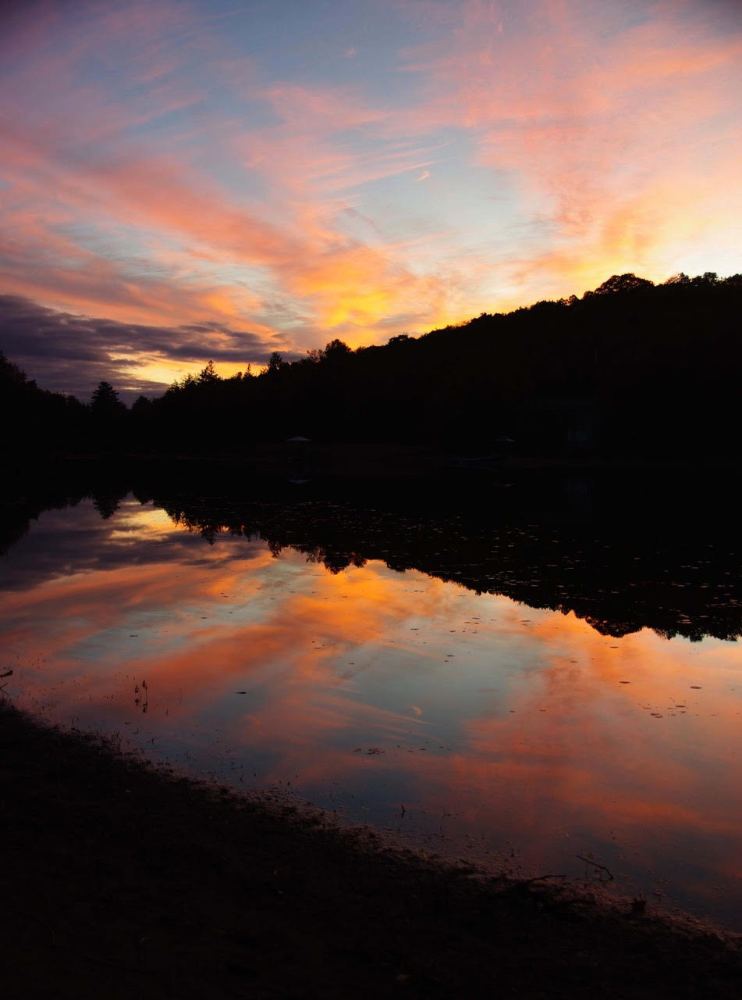

Frequently Asked Questions
Here are some common questions about Fortescue Lake, its community, and regulations. If you have more questions, please reach out via the Contact page.
- How do I become a member?
- If you have a property on the lake, please reach out via the contact information on the Contact page.
- When are monthly meetings held?
- Meetings are held annually. Please see the Events page for dates.
- Is there a community Facebook group?
- Yes! Join the conversation and get real-time updates by joining our private Fortescue Lake Facebook Group . Membership is limited to lake residents, cottagers, and their families.
- Where can I find lake rules and regulations?
- All rules are posted on our Events page under “Lake Guidelines,” with a printable PDF available for download.
- Who do I contact for emergency assistance?
- Dial 911 first. For additional emergency services, see the Trent Lakes Website..
- How do I dispose of garbage and recycling?
- Cottage waste can be taken to a Trent Lakes transfer station. You’ll need a valid Waste Disposal Access Card . Guests can use “Cottage Kit” passes from the same link.
- Where can I read the municipal by-laws?
- The complete list (noise, burning, short-term rentals, etc.) is on the Trent Lakes site: Trent Lakes By-laws & Enforcement .
- What should I know about boating safety?
- All operators need a Pleasure Craft Operator Card and must follow Ontario regulations. See the Transport Canada Safe Boating Guide. Remember the 10 km/h limit within 30 m of shore.
